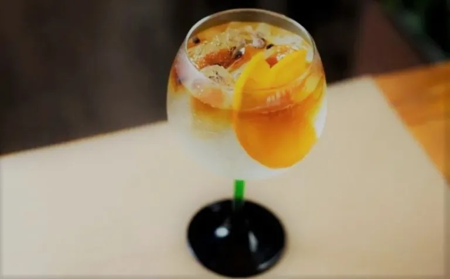

Com um logo pra lá de poderoso, a bebida chama a atenção de quem a vê. A origem da marca vem da história de Santo Huberto, um caçador medieval que, numa de suas caçadas em plena Sexta-feira Santa, encontrou um cervo com uma cruz entre os chifres e com a voz de Deus lhe chamando a conversão, o que se deu logo em seguida, tornando-o amplamente venerado na Idade Média após sua morte. Sua esposa morreu ao dar à luz seu filho e Huberto retirou-se da corte, foi para as arborizadas Ardenas e entregou-se inteiramente à caça. No entanto, uma grande revolução espiritual era iminente. De acordo com uma lenda recente, aconteceu o seguinte: Na manhã da Sexta-feira Santa, quando os fiéis lotavam as igrejas, Huberto partiu para a caça.
Enquanto perseguia um magnífico cervo, o animal se virou e, conforme narra a lenda piedosa, ficou surpreso ao perceber um crucifixo entre seus chifres, enquanto ouvia uma voz dizendo: "Huberto, a menos que você se volte para o Senhor e leve uma vida santa, você irá rapidamente para o inferno. Huberto desmontou, prostrou-se e disse: "Senhor, o que queres que eu faça?" Ele recebeu a resposta: "Vá e procure Lambert, e ele o instruirá."
Assim, homenageando a história de Humberto, Curt Mast, que trouxe o comércio de vinagre da família a um outro patamar, seguindo em uma direção diferente. Alguns anos se passaram ao ponto de ter a proeza de aperfeiçoar a combinação de 56 ingredientes botânicos da bebida. Nos dias atuais, existe uma estátua de pedra, um busto, que imortaliza a contribuição do fundador.
Receita de drink
Tônico de caçador

Ingredientes
50ml de gim
100ml de água tônica
15ml de Jagermeister
2 fatias de laranja-lima
Preparo
Em uma taça (tipo vinho tinto) com bastante gelo, misture o gim e a tônica
Por cima, coloque o Jagermeister
Finalize com as fatias de laranja
E abaixo, uma sugestão de música para acompanhar o drink